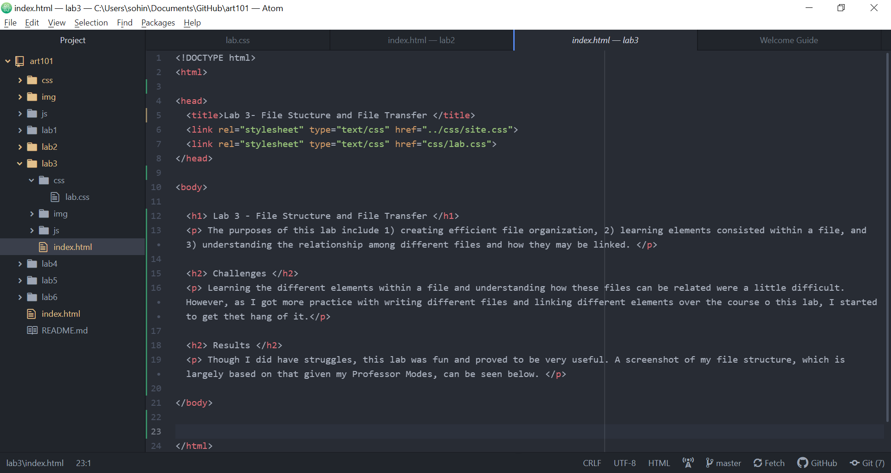

The purposes of this lab include 1) creating efficient file organization, 2) learning elements consisted within a file, and 3) understanding the relationship among different files and how they may be linked.
Learning the different elements within a file and understanding how these files can be related were a little difficult. However, as I got more practice with writing different files and linking different elements over the course o this lab, I started to get thet hang of it.
Though I did have struggles, this lab was fun and proved to be very useful. A screenshot of my file structure, which is largely based on that given my Professor Modes, can be seen below.
